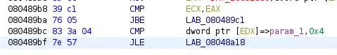

Bombs Landed — Reversing Challenge — HackTheBox Writeup
Greetings everyone. In this write-up, I’ll be tackling the Bombs Landed challenge — my first time dealing with a medium-level (50 points) reversing challenge. I’m excited to share what I’ve learned and fill in the gaps since there are no detailed write-ups available. However, I won’t be giving away the flag directly. Instead, I’ll do my best to provide a comprehensive understanding of the challenge while still keeping things engaging.
Here’s the challenge prompt -
We’re on the hunt for the hidden password in the binary. Let’s begin.
Initial Analysis
Let’s try to run this program.
/mnt/H/Misc > ./BombsLanded
Bad luck dude.
/mnt/H/Misc > ./BombsLanded 1
Bad luck dude.
/mnt/H/Misc > ./BombsLanded 1 2
Bad luck dude.
/mnt/H/Misc > ./BombsLanded 1 2 3
input password: itworked
Bad luck dude.
Running the binary as is only results in the message Bad luck dude. being displayed, with no opportunity for input. However, after some experimentation, we discover that the binary requires at least three arguments. This will become clearer in the decompilation process. When we run the binary with the correct number of arguments, it prompts for a password but, as expected, our initial attempt is met with Bad luck dude.
/mnt/H/Misc > file BombsLanded
BombsLanded: ELF 32-bit LSB executable, Intel 80386, version 1 (SYSV), for GNU/Linux 2.6.32, BuildID[sha1]=53d6c985990fd9b8ed4f1caf10ce7d64e14b2121, dynamically linked, interpreter /lib/ld-linux.so.2, no section header
The file command reveals that this binary is a 32-bit, dynamically linked executable with no section headers. This makes things tricky, as the lack of clear boundaries between the .data, .text, and .rodata sections complicate understanding the binary’s structure and functions. And, with symbols and code sections resolved during runtime, reverse engineering the binary is going to require a little extra effort.
/mnt/H/Misc > readelf -s BombsLanded
Dynamic symbol information is not available for displaying symbols.
/mnt/H/Misc > readelf --dynamic BombsLanded
Dynamic section at offset 0x1010 contains 29 entries:
Tag Type Name/Value
0x00000001 (NEEDED) Shared library: [libdl.so.2]
0x00000001 (NEEDED) Shared library: [libc.so.6]
0x0000000c (INIT) 0x8048670
0x0000000d (FINI) 0x8048c54
0x00000019 (INIT_ARRAY) 0x8049000
0x0000001b (INIT_ARRAYSZ) 8 (bytes)
0x0000001a (FINI_ARRAY) 0x8049008
0x0000001c (FINI_ARRAYSZ) 4 (bytes)
0x6ffffef5 (GNU_HASH) 0x804818c
0x00000005 (STRTAB) 0x8048318
0x00000006 (SYMTAB) 0x80481b8
0x0000000a (STRSZ) 283 (bytes)
0x0000000b (SYMENT) 16 (bytes)
0x00000015 (DEBUG) 0x0
0x00000003 (PLTGOT) 0x8049130
0x00000002 (PLTRELSZ) 104 (bytes)
0x00000014 (PLTREL) REL
0x00000017 (JMPREL) 0x8048608
0x00000011 (REL) 0x80484c0
0x00000012 (RELSZ) 328 (bytes)
0x00000013 (RELENT) 8 (bytes)
0x00000016 (TEXTREL) 0x0
0x0000001e (FLAGS) TEXTREL
0x6ffffffb (FLAGS_1) Flags: PIE
0x6ffffffe (VERNEED) 0x8048460
0x6fffffff (VERNEEDNUM) 2
0x6ffffff0 (VERSYM) 0x8048434
0x6ffffffa (RELCOUNT) 18
0x00000000 (NULL) 0x0
As we can see, the only information we can retrieve is about the dynamic section of the binary. The dynamic section shows that the binary has an initialization and finalization function, as the INIT and FINI entries have absolute addresses at the very least.
/mnt/H/Misc > checksec BombsLanded
[!] Did not find any GOT entries
[*] '/mnt/HackingUnixBinariesStuff/Misc/BombsLanded'
Arch: i386-32-little
RELRO: No RELRO
Stack: No canary found
NX: NX disabled
PIE: No PIE (0x8048000)
RWX: Has RWX segments
Another helpful aspect is that the binary doesn’t have Position Independent Executable (PIE) enabled. This is evident from the use of absolute addresses in the dynamic section of the binary. This makes our reverse engineering journey a bit smoother, as we don’t have to worry about dealing with address relocations when setting breakpoints.
/mnt/H/Misc > strings BombsLanded 1m 49s
/lib/ld-linux.so.2
libdl.so.2
_ITM_deregisterTMCloneTable
__gmon_start__
_Jv_RegisterClasses
_ITM_registerTMCloneTable
dlsym
libc.so.6
_IO_stdin_used
exit
strncmp
__isoc99_scanf
puts
printf
mmap
strlen
memset
getchar
malloc
ptrace
__cxa_finalize
__libc_start_main
free
GLIBC_2.0
GLIBC_2.7
GLIBC_2.1.3
fPf1
fPfP
WVSQ
Y[^_]
UWVS
t$,U
[^_]
input password:
Correct password:
Bad luck dude.
strncmp
;*2$"
cccc
g r c
cccc
g j c
When we run the strings command on the binary, we see some interesting strings such as mmap, malloc, strncmp, and dlsym. These strings indicate that the symbols and other sections requiring resolving are resolved dynamically, as the presence of dlsym explicitly confirms.
We also see the strings input password:, Correct password:, and Bad luck dude., which are important for our understanding of the binary. Note that the colon against Correct password is peculiar, and we will explore this soon. Additionally, the presence of scanf when getchar is already present seems odd for a simple program that just uses stdin once.
On the other hand, there is a problem that a lot of solvers apparently encounter.
According to elfparser, the binary has ptrace detection enabled.
Here, we can see that the function main is both defined and a global function. In my solution, I did not face any issues with this, but for those who might, here’s a way to bypass it:
Here, we can see that the function ptrace is defined as an external import in Ghidra (you can use tools like IDA Pro, radare2 and Binary Ninja if you want).

On the function itself, right-click and select Show references to ptrace in the References tab.
You will see that, there is an unconditional call to ptrace in this case. Double-click and take a look at the disassembly.

Here, originally this instruction was JNZ, and now we attempt to reassemble it as a JZ instruction instead. If you are debugging, the value of EAX after the ptrace call will most certainly be 0xffffffff or -1. Thus, the CMP instruction will be passed as a check and you will pass the overall ptrace check.
There are many other ways to bypass this ptrace check. You could try removing the call to ptrace altogether by replacing it with NOPs either in the ptrace function itself or the call function. You can even set the value of EAX accordingly to pass the check while debugging. But it’s easier to just patch the binary instead of doing that every debug session.
Decompilation And Disassembly
We open up the binary in Ghidra to take a look at the disassembly and its decompilation side by side.
undefined4 main(int param_1)
{
int iVar1;
undefined4 *__s;
uint uVar2;
undefined4 *puVar3;
undefined4 *puVar4;
byte bVar5;
uint local_24;
bVar5 = 0;
_DAT_10091348 = &__DT_PLTGOT;
_DAT_1009134c = _DAT_1009134c + 1;
_DAT_10091338 = _DAT_10091338 + -1;
_DAT_1009133c = _DAT_1009133c + 1;
_DAT_10091340 = _DAT_10091340 + -1;
if ((_DAT_1009133c < _DAT_1009134c) && (param_1 < 5)) {
__s = (undefined4 *)mmap((void *)0x0,0x1000,7,0x22,-1,0);
memset(__s,0xc3,0x1000);
*__s = _DAT_100911a0;
*(undefined4 *)((int)__s + 0x193) = _DAT_10091333;
iVar1 = (int)__s - (int)(undefined4 *)((uint)(__s + 1) & 0xfffffffc);
puVar3 = (undefined4 *)(&DAT_100911a0 + -iVar1);
puVar4 = (undefined4 *)((uint)(__s + 1) & 0xfffffffc);
for (uVar2 = iVar1 + 0x197U >> 2; uVar2 != 0; uVar2 = uVar2 - 1) {
*puVar4 = *puVar3;
puVar3 = puVar3 + (uint)bVar5 * -2 + 1;
puVar4 = puVar4 + (uint)bVar5 * -2 + 1;
}
for (local_24 = 0; local_24 < 0x197; local_24 = local_24 + 1) {
*(byte *)((int)__s + local_24) = *(byte *)((int)__s + local_24) ^ 99;
}
(*(code *)__s)();
memset(__s,0,0x197);
/* WARNING: Subroutine does not return */
exit(0);
}
if (3 < param_1) {
printf((char *)0x10090c70); //input password:
iVar1 = getchar();
if ((char)iVar1 == 'X') {
(*(code *)0xc3)();
__isoc99_scanf(0x10090c81); //Correct password:
}
}
puts((char *)0x10090c93); //Bad luck dude.
return 0;
}
This is the main function as decompiled by Ghidra. Here is where the weirdness happens. As you can see, it’s not an ordinary password checker. It has something else going on altogether before it. Even the password checking part is odd. Furthermore, none of the variables above are used in the password checker and is completely separate.
First, it prints out input password: and takes input via getchar. It checks whether the first character of the input we give is X or not. If it is, a function with the address c3 is called and Correct password: is passed as an argument to scanf. This makes no sense and there is no way to retrieve the password here. I spent at least 4–5 hours tinkering with this section of main and got nowhere. It is the most interesting rabbit hole I have seen in my short reverse-engineering journey.
What to do then?
Well, we can try to focus on the code above then since there is no other function with code that may be relevant. To do that, we must first pass the if condition if ((_DAT_1009133c < _DAT_1009134c) && (param_1 < 5)). In my experience, it has always been safer to just switch up the conditional jumps to their opposite counterparts. Which is exactly what we will do. Alternatively, we can try to change the values of the registers in gdb-pwndbg or patch the binary to always fulfill the condition. Or we can remove the condition altogether.
080489b8 39 c1 CMP ECX,EAX
080489ba 77 05 JA LAB_080489c1
080489bc 83 3a 04 CMP dword ptr [EDX]=>param_1,0x4
080489bf 7f 57 JG LAB_08048a18
This part of the assembly code concerns with the check that needs to be passed. To do this, we will switch from JA to JBE and from JG to JLE. This should work because the values in the registers before the CMP instruction always seem to be the same, so patching the code would allow it to pass the checks.

This is the patched code. Now, let’s jump to the CMP directly by breaking at 0x80489b8.

We break at the CMP instruction successfully.
Stepping through the code, we successfully bypass the check as seen above. After bypassing the check, we step through the code until we see this loop -
0x8048a9a movzx edx, byte ptr [edx]
0x8048a9d xor edx, 0x63
0x8048aa0 mov byte ptr [eax], dl
0x8048aa2 add dword ptr [ebp - 0x1c], 1
0x8048aa6 mov eax, dword ptr [ebp - 0x1c]
► 0x8048aa9 cmp eax, 0x196
0x8048aae jbe 0x8048a8a <0x8048a8a>
At the jbe instruction, we will loop a couple of times. So, to end the loop, we will use x/3i $eip to set a breakpoint on the address after `jbe.

As you can see that worked perfectly.

And then, three instructions after JBE, we’ll see a CALL EAX. This is where the flag is hidden. To step into this, we’ll use the si (step into) command.
As you can see, there are multiple MOV instructions done with a couple of hex characters. There is a high likelihood of this having something to do with our flag.
0xf7fc000a mov dword ptr [ebp - 0x14], 0x6c333374
0xf7fc0011 mov dword ptr [ebp - 0x5c], 0x647f6573
0xf7fc0018 mov dword ptr [ebp - 0x58], 0x786f7c6f
0xf7fc001f mov dword ptr [ebp - 0x54], 0x6463656d
0xf7fc0026 mov dword ptr [ebp - 0x50], 0x6c657e6d
0xf7fc002d mov dword ptr [ebp - 0x4c], 0x676e6463
0xf7fc003a mov dword ptr [ebp - 0x6d], 0x61647a7d
0xf7fc0041 mov dword ptr [ebp - 0x69], 0x75643460
0xf7fc0048 mov dword ptr [ebp - 0x65], 0x7b636767
0xf7fc004f mov dword ptr [ebp - 0x61], 0x342e7066
These are all the instructions featuring a series of hex strings.
>>> import pwn
>>> l=[0x6c333374,0x647f6573,0x786f7c6f,0x6463656d,0x6c657e6d,0x676e6463,0x61647a7d,0x75643460,0x7b636767,0x342e7066]
>>> print(''.join([pwn.p32(i).decode() for i in l]))
t33lsedo|oxmecdm~elcdng}zda`4duggc{fp.4
>>>
Using pwntools, we try to decrypt these hex characters into strings and we get a row of nonsense.
As it turns out, this string (in little-endian) is looped through and eventually produces the string input password:

We can see that happening above here.
00:0000│ esp 0xffffceb0 —▸ 0xffffcedb ◂— 'input passw{fp.4'
01:0004│ 0xffffceb4 ◂— 0x3055e4
02:0008│ 0xffffceb8 —▸ 0xf7fc1958 —▸ 0xf7ffdbac —▸ 0xf7fc1a94 —▸ 0xf7ffda40 ◂— ...
03:000c│ 0xffffcebc —▸ 0xffffcf30 —▸ 0xf7d77ad6 (__memset_sse2_rep+294) ◂— add ebx, 0xa551e
04:0010│ 0xffffcec0 —▸ 0xffffcf34 ◂— 0x6c333374 ('t33l')
05:0014│ 0xffffcec4 —▸ 0xf7fd2fce (_dl_lookup_symbol_x+302) ◂— add esp, 0x30
06:0018│ 0xffffcec8 —▸ 0xf7c09a54 ◂— 0x61ab
07:001c│ 0xffffcecc —▸ 0xffffcf34 ◂— 0x6c333374 ('t33l')
In the stack above, we also see remnants of the string we converted using python. Thus, it’s possible that when the instruction strncmp is run against our input, a similar decryption loop occurs and thus we will be able to see the flag.

When you reach this part of the execution, if EAX is not equal to 0x0, the program eventually exits. However, when debugging, we can set EAX to 0x0 by using the command set $eax=0x0. Once this is done, you will be greeted with the result.
We are on the right track, but we are skipping a certain part of the code.

This is the only instruction that looked suspicious enough before the checking (and printing you win if you get it right). On stepping in a few instructions inside the CALL EAX, we see the following -
Now, we know we are on the right track since we see that strncmp is now resolved using dlsym. Normally, in gdb-pwndbg you can see the arguments fed into strncmp but here we can’t since this is just a dynamically linked symbol within the CALL EAX. This tells me that the CALL EAX done is actually running strncmp. Thus, let’s step over the call dlsym and see what happens.

After stepping in with ni a couple of times, we start to see interesting things. Take a look at $esp+4. We see a y. Let’s step in some more.

We are starting to see something interesting. After stepping enough times we find the password.
00:0000│ esp 0xffffce80 —▸ 0xffffcf02 ◂— 'asdasdadsasda'
01:0004│ 0xffffce84 —▸ 0x804a9c0 ◂— 'younexxxxxxxx'
02:0008│ 0xffffce88 ◂— 0x15
03:000c│ 0xffffce8c —▸ 0xf7c53b25 (__isoc99_scanf+37) ◂— add esp, 0x1c
04:0010│ 0xffffce90 —▸ 0xf7e1d620 (_IO_2_1_stdin_) ◂— 0xfbad2288
05:0014│ 0xffffce94 —▸ 0x804a9c0 ◂— 'younexxxxxxxx'
06:0018│ 0xffffce98 —▸ 0xf7d8a1e0 (__strncmp_sse4_2) ◂— push ebp
07:001c│ 0xffffce9c ◂— 0x15
Here, I’ve censored the password, but you can see it in the stack if you try this method out for yourself.
The final flag is HTB{<the password you find on the stack>}.
I still couldn’t figure out where this piece of code came from. I tried searching for cross-references of functions like dlsym, strncmp, and strlen, but all I found was a reference to an unknown code unit. This means that the code we just looked at was created at runtime and can’t be found in static analysis. Extremely interesting puzzle and I learned a lot about anti-reversing/debugging and how difficult it can be to bypass such measures.
I hope you learned something from this blog :)
Thank you for reading.